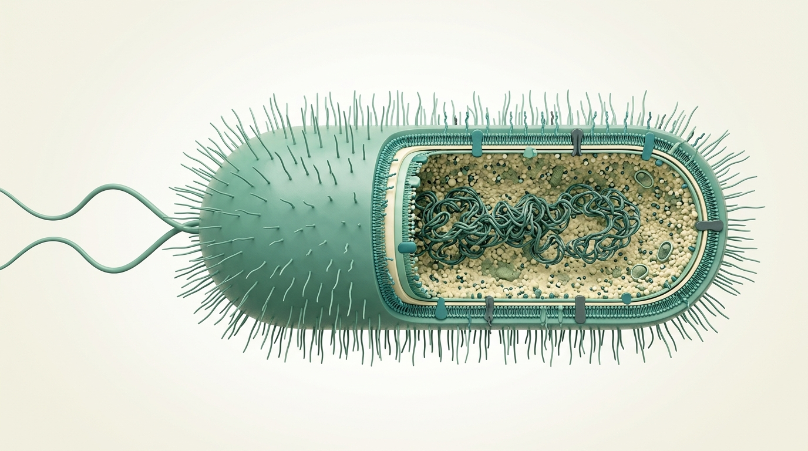

Tế bào vi khuẩn có thể mang các cấu trúc ở ngoài bề mặt như lông và roi. Bao quanh tế bào chất là màng tế bào và thường có thành tế bào; ở vi khuẩn Gram âm còn có màng ngoài. Không phải mọi vi khuẩn đều có đầy đủ tất cả cấu trúc minh họa.
